地政学
マニラは南シナ海と太平洋の間にあり、米比同盟、海洋権益、海外出稼ぎ、災害対応を束ねる首都である。港と空港は島々を外へ開く玄関口で、政治の揺れも全国へ伝える中枢だ。海と移民の地図が都市を読む鍵となる。

🇵🇭 フィリピン / アジア / World City Atlas
湾岸の港、スペイン城塞、米国統治の制度、カトリック信仰、出稼ぎ送金、外包産業、低地の水害が重なる島嶼国家の首都圏。
都市の骨格
マニラ湾、パシッグ川、古い城塞都市、巨大な商業地、港湾、空港、密集住宅が近接し、政治と生活の緊張を濃く映す。
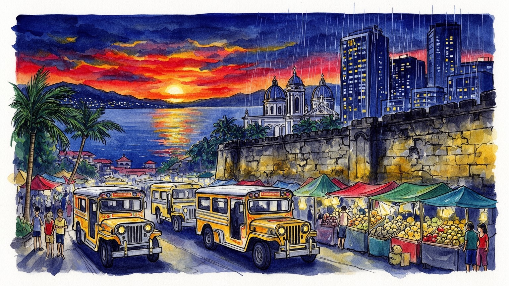
マニラは南シナ海と太平洋の間にあり、米比同盟、海洋権益、海外出稼ぎ、災害対応を束ねる首都である。港と空港は島々を外へ開く玄関口で、政治の揺れも全国へ伝える中枢だ。海と移民の地図が都市を読む鍵となる。
行政、港湾、金融、不動産、小売、教育、医療、コールセンターが雇用を支え、露店、配達、家事労働も街を動かす。高層業務地の成長と不安定な都市労働が並び、送金経済も深く関わる。夜勤と通勤の重さも見える。
カトリックの祭礼、スペイン植民地の城壁、米国統治の制度、タガログ語と英語の混在、映画や音楽、大学街が重なる。祈りと家族、政治的な広場文化が都市の公共性を形づくる。信仰は街路の熱気にも強く表れている。
ジープニー、鉄道、渋滞、モール、市場、教会、湾岸の夕景、イントラムロスの石畳が日常と旅をつなぐ。洪水や住宅不足、治安不安もあり、明るい街路の奥に格差が見える。食堂と教会が旅の記憶を濃く残していく。
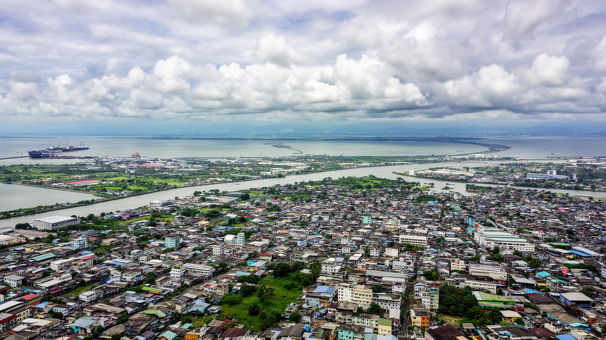
マニラの都市構造は、マニラ湾とパシッグ川、ラグナ湖へ続く低地を重ねると理解しやすい。港と旧市街は湾に向かって開き、川沿いには商業、倉庫、住宅、行政機能が細く連なってきた。首都圏は行政上いくつもの市に分かれるが、通勤、学校、病院、買い物、教会、港湾物流は一体の生活圏として動く。海に近い開放性は交易と移民を生んだ一方、高潮、台風、豪雨、地盤沈下、河川汚染を都市の基本条件にした。埋立地や湾岸道路は新しい業務地と観光空間を作るが、漁民、低所得住宅、湿地、洪水対策との衝突も抱える。川を越える橋、空港へ向かう幹線道路、郊外の住宅地は、都市の広がりと渋滞を同時に示す。マニラは海から国を外へつなぎ、川と低地によって脆さを突きつけられる首都である。地図上では小さく見える水路や排水路も、雨季には生活の安全を左右する。湾の夕景は美しいが、その背後には港湾の荷役、沿岸開発、避難計画、住宅の更新が重なっている。海風、湿気、排気ガス、濁った川の匂いは、地形を抽象的な条件ではなく身体で感じる現実にする。高架道路の下の市場、川岸の洗濯物、埋立地のオフィスを同じ地図に置くと、自然と開発の距離が見えてくる。低地で暮らす人びとの知恵は、排水溝の掃除、床の高さ、雨雲の読み方にも表れ、都市計画の外側で生活を守っている都市だ。
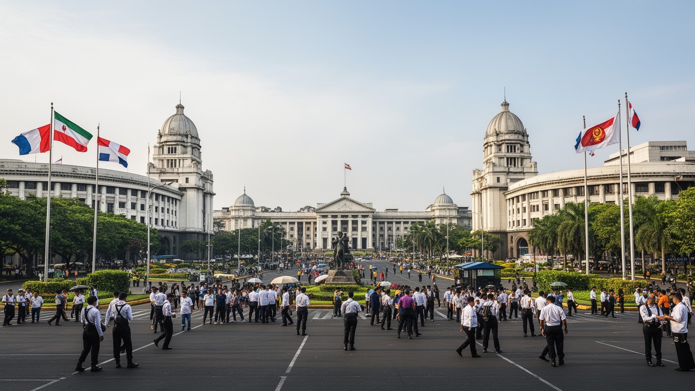
マニラはフィリピンの政治を象徴する都市であり、大統領府、議会、最高裁、官庁、大学、新聞社、テレビ局、市民団体が首都圏の中で互いに近い距離にある。植民地時代の統治機構、独立後の政党政治、戒厳令、民衆革命、汚職批判、家族政治への反発は、広場、橋、大学キャンパス、教会の前に記憶として残る。国の島嶼性は地方分権を難しくし、災害、治安、交通、教育、医療、海外労働者の保護まで中央政府の判断が首都に集まりやすい。選挙の熱気は街頭ポスター、集会、ラジオ、オンライン世論に表れ、政治は遠い制度ではなく家族や地区の人間関係にも入り込む。首都圏には富裕層のゲート付き住宅、軍や警察の施設、官僚の執務室、抗議デモの集合場所が共存する。国家の決定が一部の中心地区に集中するほど、地方や都市貧困層の声をどう反映するかが問われる。マニラの政治性は建物の威容より、道路を埋める群衆、教会の鐘、報道の即時性、災害時の救援要請に強く現れる。政治家の姓が地区の記憶や雇用の期待と結びつくため、投票は理念だけでなく生活の安全網にも関わる。首都の広場は祝祭、追悼、抗議、祈りを受け止め、民主主義の緊張を日々の風景にしている。報道機関や大学が近いことは権力監視の力になるが、同時に圧力や分断も受ける。政治を読むには、制度と街頭の双方を見なければならない。
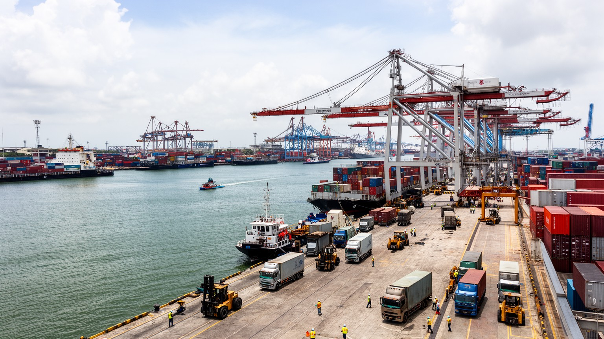
マニラ港は、フィリピンの消費と生産を世界市場へ接続する重要な装置である。コンテナ、食品、燃料、建材、衣料、電子部品は港から倉庫、トラック、卸売市場、モール、工場、島々へ流れ、首都圏の渋滞や物価にも影響する。島国であるフィリピンでは海運と航空の役割が大きく、港と空港の混雑は国内の地域格差や災害対応を左右する。マニラの港湾は経済成長を支える一方、古い市街地の道路容量、排気ガス、労働安全、湾岸環境、港周辺の居住問題を抱えている。荷役作業員、運転手、通関業者、倉庫労働者、露店商、警備員は、物流を数字では見えにくい身体労働として支える。港湾の近代化や郊外移転の議論は、効率だけでなく雇用、都市景観、沿岸住民の生活を動かす。観光客が見る湾岸の夕景の背後では、夜間も貨物が動き、首都の食卓と建設現場を支えている。港を読むことは、マニラが単なる行政首都ではなく、島々の生活を集めて再配分する都市であることを理解する近道である。台風で航路が乱れれば、遠い島の価格と病院の供給にも影響が及ぶ。港湾の効率化は国家競争力の課題であると同時に、周辺地区の騒音、交通事故、雇用の安定をどう扱うかという生活の問題でもある。港に近い地区では、朝早い市場の動きと深夜のトラックが生活時間を決める。海運の流れは、島国の首都を常に全国の台所と倉庫にしている。
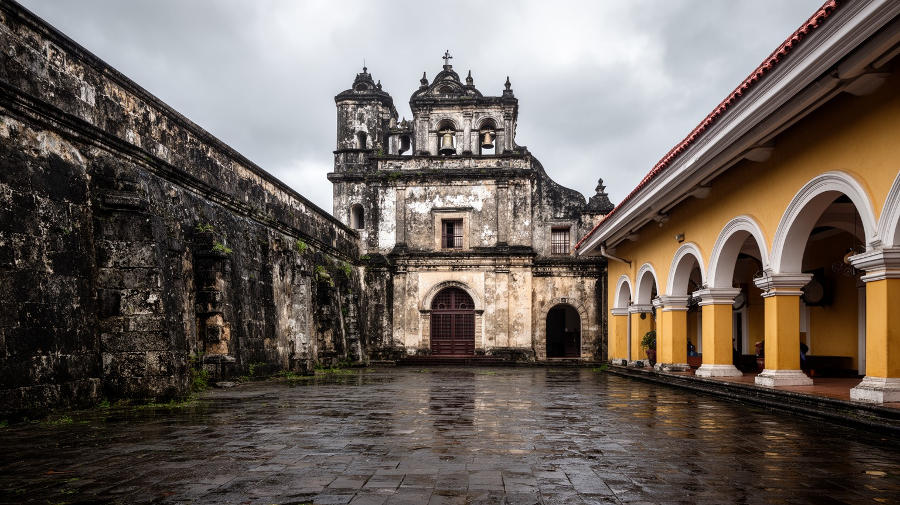
イントラムロスは、マニラを理解するための強い入口である。城壁、石畳、教会、修道院跡、砦は、スペイン帝国がアジアとアメリカを結んだ交易と布教の拠点を物語る。ここではカトリックの制度、植民地行政、メスティーソ社会、教育、軍事が都市の中心を形づくり、周囲の中国系商人地区や先住の集落と緊張しながら発展した。米国統治は英語教育、公共衛生、都市計画、法制度を持ち込み、第二次世界大戦の激戦は旧市街に深い破壊を残した。観光地として整えられた城壁を歩くだけでは、植民地支配の暴力、宗教的な改宗、交易の利益、戦争被害、独立運動の記憶を十分に捉えられない。マニラの歴史は一つの支配者の物語ではなく、スペイン、米国、日本、華人社会、地元住民、教会、商人、労働者が折り重なった複層の都市史である。復元された建物と失われた街区の間には、記念される過去と忘れられやすい生活史の差がある。古い石壁は美しい景観であると同時に、誰が都市の中心に入れたのかを問う境界でもある。学校の遠足、結婚写真、観光馬車、歴史解説は、過去を親しみやすくする一方で痛みを柔らかく包み込むこともある。記念碑の陰に残る破壊の記憶まで読む時、旧市街は単なる名所ではなく、都市の倫理を考える場になる。保存と商業利用の釣り合いは難しく、入場料や演出が増えるほど、周辺で暮らす人の記憶をどう残すかが課題になる。
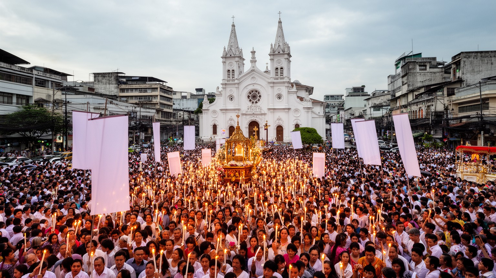
マニラの日常にはカトリック信仰が濃く流れている。教会のミサ、聖像への祈り、家族の洗礼や葬儀、学校教育、慈善活動、街頭の小さな祭壇は、宗教を個人の内面だけでなく地域生活の仕組みにしている。キアポの黒いナザレ像をめぐる大規模な信心は、都市の混雑、熱気、身体性、貧困層の希望を可視化する行事であり、信仰が公共空間を占める力を示す。イスラム教徒、プロテスタント、華人寺院、民間信仰も首都圏に存在し、移住と商業の歴史を映す。教会は災害時の避難や支援、政治的発言、教育機関としても働き、時に国家権力と緊張し、時に保守的な価値観を支える。家族主義、結婚、性と生殖、貧困救済をめぐる議論では、宗教の影響を抜きに都市を読めない。観光客にとって教会は歴史的建築かもしれないが、住民にとっては祈り、相談、共同体、記憶の場である。信仰の行列が道路を満たす時、マニラでは交通の都市と祈りの都市が同じ街路で重なり、都市の公共性が一時的に作り替えられる。聖週間や地区の祭りでは、親族が集まり、露店が増え、音楽と祈りが夜まで続く。信仰は貧困を解決する制度ではないが、不安の多い都市で人びとが耐え、助けを求め、互いを確認する言葉を与えている。病院や学校の近くに礼拝の場があることは、生と死、学びと生活が信仰を通じて結ばれていることを示している。
マニラ首都圏の現代経済を語る時、ビジネス・プロセス・アウトソーシングは欠かせない。英語力、若い労働力、米国との制度的な近さ、通信インフラを背景に、コールセンター、会計処理、IT支援、医療事務、顧客対応の仕事が高層オフィスや郊外の業務地区に集まった。夜勤で北米や欧州の時間に合わせる労働は、都市の生活リズムを変え、深夜の飲食、警備、交通、健康管理を必要とする。外包産業は中間層への入口を広げ、若者に比較的高い賃金と英語を使う仕事を提供したが、感情労働、監視、離職、睡眠障害、キャリアの伸び悩みも生む。海外出稼ぎからの送金と同じく、国外の需要がマニラの家計を支える構造は、世界経済の変動に敏感である。マカティ、ボニファシオ・グローバルシティ、オルティガスの業務地は、整った歩道や高層ビルで新しい顔を見せるが、その周囲では長い通勤と家賃の負担が続く。サービス経済の成長は都市に自信を与える一方、誰が夜に働き、誰が便利さを買っているのかを見えにくくする。英語で世界の顧客に応対する若者が、帰宅時には混雑した乗り物と不安定な歩道に戻る落差は大きい。賃金の上昇は家族を支える力になるが、都市の物価や住宅費も同時に押し上げ、成長の果実を均等には分けない。自動化技術の普及は雇用の将来を揺らすため、訓練、労働保護、健康管理がより重要になる。
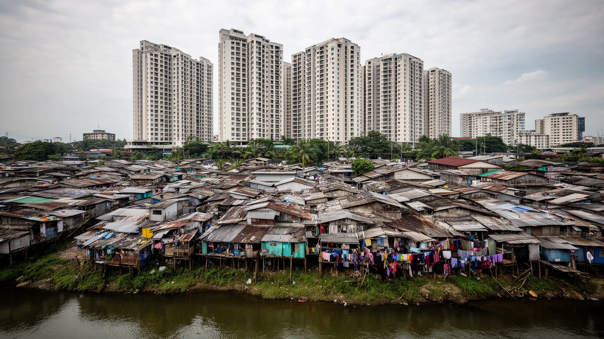
マニラの住宅問題は、首都圏の成長を最も鋭く映す。高層コンドミニアム、ゲート付き住宅、再開発された業務地が増える一方、河川沿い、鉄道沿い、港湾周辺、低湿地には密集した住まいが広がり、洪水、火災、衛生、立ち退きの不安が日常化する。地方から仕事を求めて来た人びとは、家賃の安さ、親族の助け、通勤距離、学校や市場への近さを考えながら不安定な住まいを選ぶ。インフォーマル居住は単なる貧困の記号ではなく、都市労働を支える生活基盤でもある。家事労働者、建設労働者、警備員、販売員、配達員、屋台商は、中心地区の豊かさを支えながら、その近くに安全な住宅を得にくい。再定住政策は危険地域から人を移す目的を持つが、郊外へ離されると仕事、学校、交通費、地域の助け合いを失うことがある。モールや高層ビルの光と、排水路沿いの狭い路地は同じ都市の現実である。住宅を読むことは、マニラの経済成長が誰の生活を安定させ、誰を周辺へ押し出しているのかを問うことである。安全な住まいは福祉ではなく、都市を動かす前提である。子どもの勉強場所、夜勤後に眠れる静けさ、清潔な水、避難できる道路は、すべて住宅の質に含まれる。土地の権利が曖昧な地区では、住民は家を直しても将来を確信できず、都市への貢献が制度に認められにくい。近所の店や教会は支えになるが、災害や立ち退きで壊れやすい。
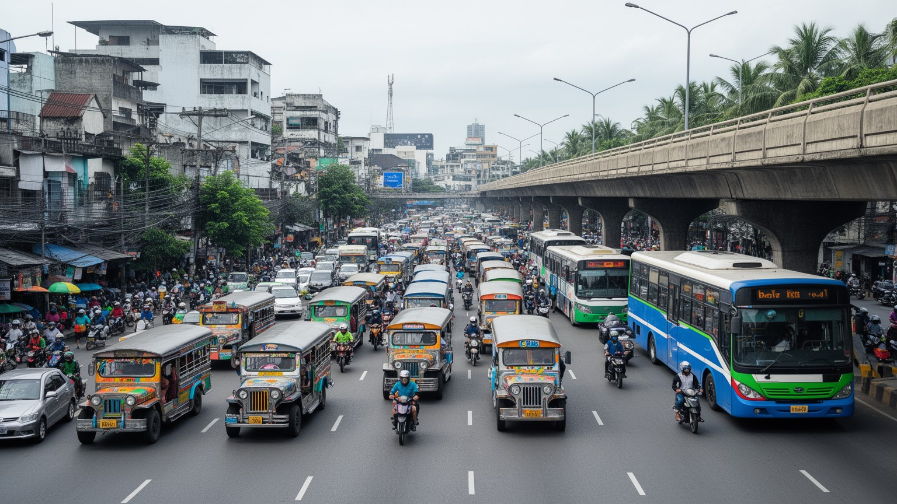
マニラの日常時間は、交通によって大きく形づくられる。ジープニー、バス、三輪タクシー、鉄道、タクシー、配車アプリ、徒歩が複雑に重なり、通勤や通学はしばしば長く不確実な移動になる。ジープニーは戦後の創意と庶民交通の象徴であり、路線の柔軟さと安さで街を支えてきたが、排気ガス、老朽化、運転手の収入、近代化政策をめぐる対立も抱える。鉄道路線は重要だが需要に対して不足し、駅までのアクセスや混雑、故障は生活の負担になる。渋滞は単なる不便ではなく、睡眠時間、家族との時間、学習、医療受診、物流費、空気の質を削る社会問題である。モールや業務地は車を前提に設計されることが多く、歩行者や障害者、高齢者には厳しい場所もある。雨季の冠水は移動をさらに難しくし、低所得者ほど代替手段を持ちにくい。交通改革は道路を増やすだけでは足りず、公共交通の信頼性、歩道、排水、運賃、労働者の生活をまとめて考える必要がある。マニラを歩く視点は、移動の不平等を通じて都市の格差を見せる。朝の待ち列、車内の暑さ、乗り換えの危険、帰宅の遅れは、統計よりも強く生活の疲れを伝える。働く場所が増えても、そこへ到達する時間が長すぎれば、成長は家族の会話や休息を奪ってしまう。運転手や車掌の収入も政策で揺れるため、交通改善は利用者だけでなく働く側の暮らしを含めて考える必要がある。
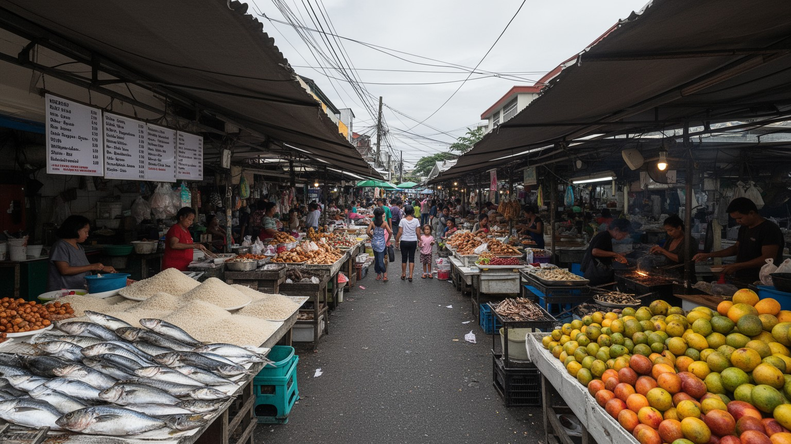
マニラの食文化は、家庭、露店、市場、食堂、モール、海外から戻る家族の記憶によって作られる。アドボ、シニガン、パンシット、ルンピア、レチョン、ハロハロのような料理は、祝祭や日常の食卓、学校帰りの軽食、深夜勤務の休憩に結びつく。市場では魚、肉、野菜、果物、米、調味料が密集した売り場を通って動き、価格の変化は家計にすぐ響く。スペイン、中国、米国、マレー系の影響は味に混ざり、英語とタガログ語が交差する都市の会話と同じように多層的である。モールのフードコートやチェーン店は冷房と安全な空間を提供し、路上の屋台や小さなカンティーンは低価格と近所の関係を支える。海外労働者の送金や帰国は、家族の外食、菓子、贈り物、祝いの食卓にも表れる。食の豊かさの背後には、早朝の仕入れ、暑い厨房、配達、清掃、低賃金の接客がある。観光として味を楽しむだけでなく、誰が市場を開き、誰が値上げに苦しみ、誰が夜勤後に温かい食事を探すのかを見ると、マニラの暮らしが立体的になる。食は家族の結束と都市の不平等を同時に映す。暑い午後の甘い飲み物、共同で分ける料理、帰国者が持ち帰る菓子は、離れて暮らす家族を結び直す。市場の混雑とモールの冷房の差は、都市の階層を味覚と身体感覚で知らせる。祝祭の大皿料理は地域の誇りを表し、日々の米と魚の価格は生活の不安をそのまま映す。
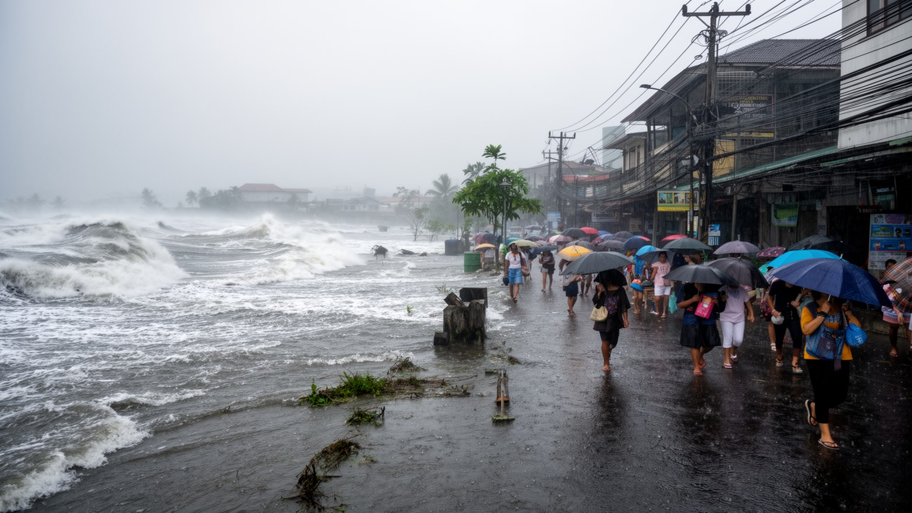
マニラは気候リスクを避けて通れない都市である。雨季の豪雨、台風、高潮、河川の氾濫、排水不良、地盤沈下、海面上昇は、湾岸低地に広がる首都圏を繰り返し試す。洪水は道路や鉄道を止めるだけでなく、学校、病院、市場、職場、家庭の衛生を直撃し、低所得地区ほど被害が大きくなりやすい。屋根の弱い住まい、排水路沿いの住宅、密集した路地では、避難情報があっても移動先や財産の保管が難しい。都市開発は舗装面を増やし、河川や湿地の余地を狭めるため、短時間の雨でも冠水が起こりやすい。防潮堤、排水ポンプ、河川清掃、住宅移転、早期警報、学校の避難所化は必要だが、技術だけでは信頼を作れない。住民が危険を知りながらその場所に住むのは、仕事、学校、交通費、親族の助けを失えないからである。気候適応を語る時、マニラでは環境政策と貧困対策、住宅政策、交通政策を分けられない。水害は自然災害であると同時に、都市の不平等がどこに集まっているかを示す鏡である。雨のたびに店を閉める人、濡れた教科書を乾かす子ども、通勤を諦める夜勤者がいる。復旧の速さは地区ごとに違い、同じ嵐でも被害の記憶は平等ではない。気候の強さに耐えるには、排水路だけでなく信頼される行政と近隣の助け合いが必要になる。暑熱も深刻で、屋外労働者や高齢者、狭い住宅に暮らす人ほど休息しにくい。
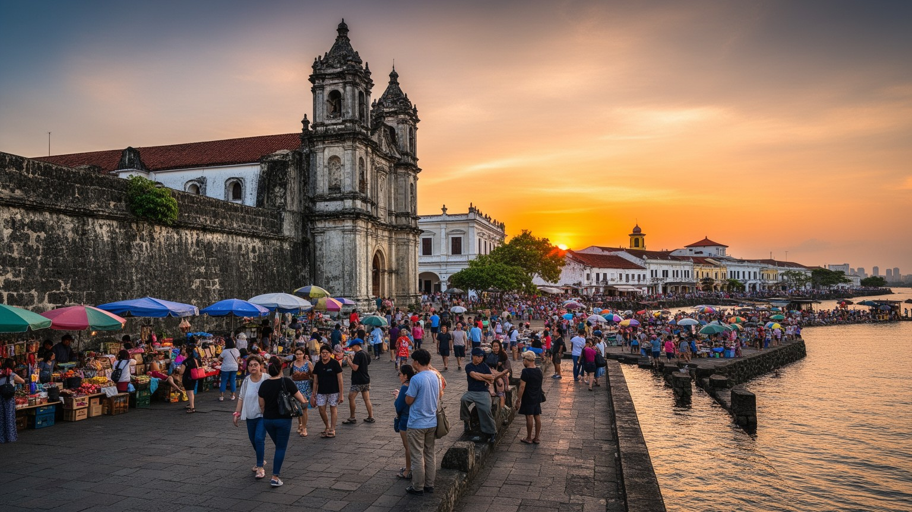
マニラ観光は、イントラムロス、サン・アグスティン教会、リサール公園、国立博物館、キアポ、市場、チャイナタウン、湾岸の夕景、モールをつないで歩くと厚みが出る。城壁や教会は植民地支配と信仰の歴史を見せ、博物館は島々の文化と独立の記憶を首都に集める。キアポやビノンドでは、祈り、商売、屋台、交通、華人社会の歴史が密に重なり、観光客の視線と住民の生活が同じ歩道を使う。湾岸の夕景や大型モールは現代的な都市の明るさを示すが、そこへ向かう道路の渋滞、警備、露店、清掃労働も観光体験の一部である。マニラは整った観光都市としてだけ見ると、戦争の破壊、貧困、洪水、政治の熱気を見落とす。逆に困難だけに注目すると、家族の温かさ、音楽、食、信仰、商いの活力を見失う。短い滞在でも、旧市街の石壁から市場の混雑、湾岸の空、鉄道駅の行列まで視野を広げれば、都市の多層性が見えてくる。旅は消費で終わらず、島国の首都が抱える歴史と現在を読む入口になる。安全や移動の制約を意識しながら、案内人、店主、運転手、学生の声に耳を向けると、名所の背後に生活の判断が見える。マニラの魅力は完璧な整序ではなく、矛盾を抱えたまま人びとが都市を使い続ける強さにある。夕方の湾岸、教会の中庭、屋台の湯気を結んで歩くと、歴史と日常が別々ではないことが分かる。